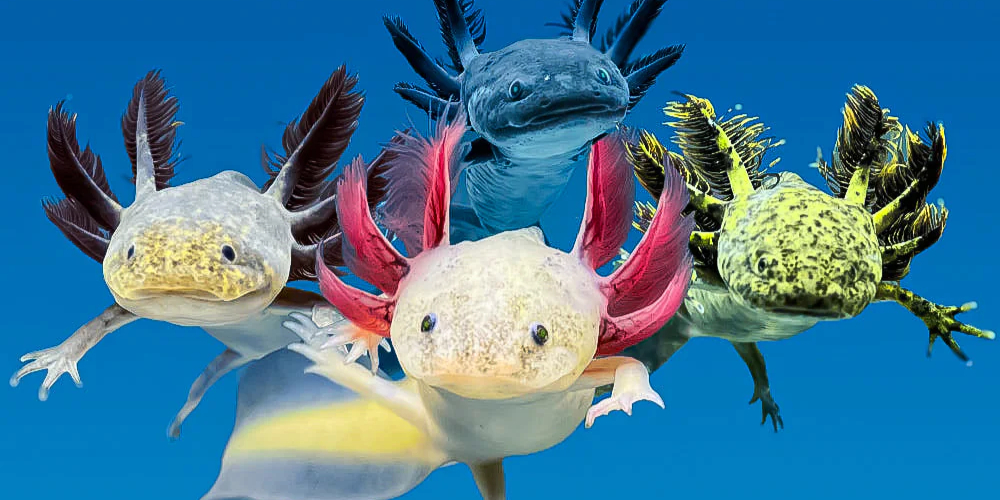
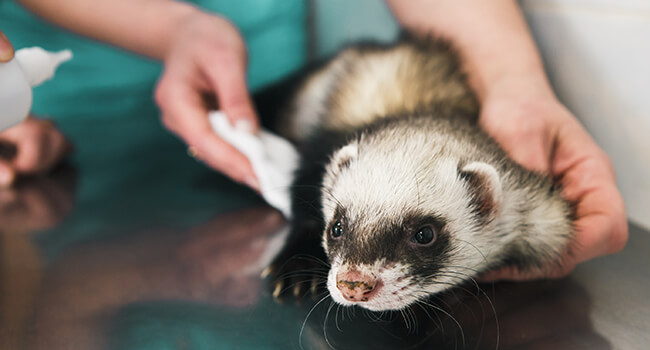

Deciding to bring an exotic pet into your life is no easy feat. It requires hour of research, specialized habitats, and a long-term commitment to ethical pet care. While the responsibilites are significant, having an exotic friend is certainly exciting. Our guides are here to help you navigate those challenges and ensure safety for your future pets!
Explore our catalog to find which pet best matches your interest
Review the safety checklist and pet requirements for your exotic pet
Apply through certified ethical breeders to begin the adoption process
A unique companion requires unique responsibilites. There are critical factors like the availability of a specialized vet and legality of the pets within your state. Missing even one of these details can lead to a world of trouble for both you and your pet. To learn more about the checklist click below!
